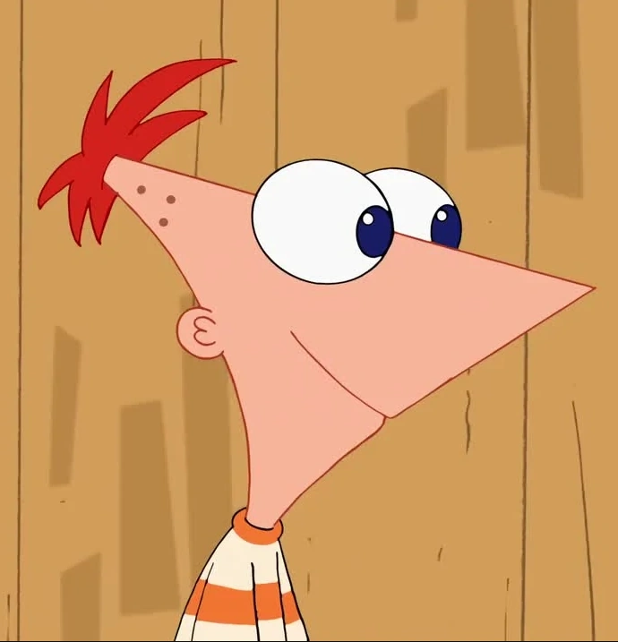

2K
-
2K24
Cartoons-Blog
All Cartoons
Cartoon Network:
- November 18, 1998
The Powerpuff Girls:

The Powerpuff Girls[b] is an American superhero animated television series created by animator Craig McCracken and produced by Hanna-Barbera (later Cartoon Network Studios) for Cartoon Network. The show centers on Blossom, Bubbles, and Buttercup, three kindergarten-aged girls with superpowers. They live in the fictional city of Townsville with their father and creator, a scientist named Professor Utonium, and are frequently called upon by the city's mayor to help fight nearby criminals and other enemies using their powers.
While attending his second year at CalArts in 1992, McCracken created a short film, Whoopass Stew!, about a trio of child superheroes known as the Whoopass Girls, which was only shown at festivals. Following the name change to The Powerpuff Girls, McCracken submitted his student film to Cartoon Network, who aired the series' refined pilot, "Meat Fuzzy Lumpkins", in its animation showcase program World Premiere Toons on February 20, 1995, along with its follow-up, "Crime 101", on January 28, 1996. Network executives gave McCracken the greenlight for a full series, which debuted as a Cartoon Cartoon on November 18, 1998.
The Powerpuff Girls aired on Cartoon Network for six seasons, three specials, and a feature film, with the final episode airing on March 25, 2005. A total of 78 episodes were produced, in addition to the two pilots, a Christmas special, the film, a tenth anniversary special, and a special episode in computer animation. Various spin-off media include an anime, three CD soundtracks, a home video collection, comic books, a series of video games, a 2016 reboot series, and an upcoming reboot series, as well as various licensed merchandise. The series has been nominated for six Emmy Awards, nine Annie Awards, and a Kids' Choice Award during its run.
Characters
Blossom
Buttercup

Bubbles
Mojo
- July 19, 2003
Teen Titans:

Teen Titans is an American animated superhero television series created by Glen Murakami and developed by Murakami, David Slack and Sam Register. Based on DC Comics's superhero team Teen Titans, it was produced by Warner Bros. Animation, and DC Comics (for season 5). The show premiered on Cartoon Network on July 19, 2003; its first two seasons also aired on Kids' WB. Initially, only four seasons were planned, but the popularity of the series led to Cartoon Network ordering a fifth season. The final half-hour episode of the show, "Things Change", aired on January 16, 2006; it was later followed by a TV movie, Teen Titans: Trouble in Tokyo, that premiered on September 15 the same year, serving as the series finale. A 15-minute episode titled "The Lost Episode" was released as part of an online promotional campaign by Post Consumer Brands in January 2005.
Teen Titans became one of Cartoon Network's most popular series, renowned for its humor, storylines, and banter between the main characters. During its run, the series was nominated for three Annie Awards and one Motion Picture Sound Editors Award. Spin-off media included comics, DVD releases, video games, music albums, and collectible toys. In 2013, the show spawned a spin-off, titled Teen Titans Go!, which received a theatrical film that was released on July 27, 2018, titled Teen Titans Go! To the Movies. In 2019, a crossover film with Teen Titans Go! was released, titled Teen Titans Go! vs. Teen Titans. It features the first appearance of the original series characters after 13 years.
The series was first shown on Boomerang from February 2, 2009, replacing the Super Friends until October 31, 2010. It returned to Boomerang's line-up on October 3, 2011, and left the schedule again on June 1, 2014.
Characters

Robin
Star Fire
Raven
Beast Boy
Cyborg
- 24 August 2001
The Grim Adventures of Billy & Mandy:

The Grim Adventures of Billy & Mandy[b] is an American animated television series created by Maxwell Atoms for Cartoon Network. It follows Billy, a dimwitted, happy-go-lucky boy, and Mandy, a cynical, remorseless girl, who, after winning a limbo game to save Billy's pet hamster, gains Grim, the mighty Grim Reaper, as their "best friend forever". Grim, who is reluctant to serve the two children, has access to supernatural items, spells, and other abilities that often lead Billy and Mandy to interact with otherworldly environments, characters, or situations.
Billy & Mandy began as a segment on Grim & Evil, from which it was a spin-off, along with sister series Evil Con Carne, on August 24, 2001. Although the 2003–2004 episodes were produced for Grim & Evil, the series aired (as a separate series) from June 13, 2003, to October 12, 2008, on Cartoon Network. In 2007, the series produced two made-for-TV movies, respectively titled Billy & Mandy's Big Boogey Adventure and Billy & Mandy: Wrath of the Spider Queen. A crossover special with fellow Cartoon Network series Codename: Kids Next Door, entitled "The Grim Adventures of the KND", aired on November 11, 2007. The series finale, a made-for-TV movie titled Underfist: Halloween Bash (intended to serve as a pilot for a new spin-off series), aired on October 12, 2008.
During its run, the series won two Emmy Awards and one Annie Award, with nominations for one Daytime Emmy Award, three Golden Reel Awards, and two other Annie Awards. Billy & Mandy has also been made into a video game as well as various licensed merchandise.
Characters
Billy
Mandy

Grim
- December 27, 2005
Ben 10 (Classic)
Ben 10 (retroactively known as Classic Ben 10) is an American animated series created by Man of Action, produced by Cartoon Network Studios and distributed by Warner Bros. Domestic Television. The series is about a 10-year-old boy named Ben Tennyson who gets a watch-style alien device called the "Omnitrix". Attached to his wrist, it allows him to transform into 10 different alien creatures with different abilities, allowing him to fight evil from Earth and space with his cousin Gwen and grandfather Max. The series first aired on Cartoon Network as a sneak peek on December 27, 2005, as part of "Sneak Peek Week", airing alongside other shows, including My Gym Partner's a Monkey, Robotboy and Zixx. It later became a full series airing from January 13, 2006, to April 15, 2008.
The series gradually became popular and was nominated for two Emmy Awards, winning one for "Outstanding Individual Achievement in Animation". The show spawned a franchise: three continuations were released respectively as Ben 10: Alien Force, Ben 10: Ultimate Alien and Ben 10: Omniverse; as well as a reboot of the series in 2016
The series centers around Ben Tennyson (Tara Strong), a ten-year-old boy on a cross-country summer vacation, with his cousin Gwen (Meagan Smith) and their grandfather Max (Paul Eiding). On their first night camping in their grandfather's RV affectionately named the "Rustbucket," Ben finds an alien pod with a mysterious watch-style device named the Omnitrix. The device then permanently attaches itself to his wrist giving him the ability to transform into a variety of alien life-forms each with its own unique skills and powers. With his newfound superpowers Ben has to learn the responsibilities of being a hero. During their vacation, the Tennysons are attacked by various enemies ranging from space aliens to supernatural entities.
Characters
Ben tennyson
Gwen tennyson
Kevin 11
Max tennyson
vilgax
- December 27, 2005
Class of 3000:

Class of 3000 is an American animated children's[1] musical television series created by André 3000 (best known as a member of the hip hop duo Outkast) and Thomas W. Lynch for Cartoon Network. Produced by Tom Lynch Company and Moxie Turtle for Cartoon Network Studios, the series follows superstar and music teacher Sunny Bridges (voiced by André), who teaches a group of students at Atlanta, Georgia's Westley School of Performing Arts.[2] Bridges is a jazz and blues artist who occasionally lectures in Atlanta's Little Five Points residential area. (Referencing Atlanta, both OutKast and Cartoon Network are based in Atlanta.) Twenty-eight episodes were produced.[3] The show debuted shortly after the hip-hop duo's breakup.
Class of 3000 is the final Cartoon Network original series to premiere when Jim Samples was Cartoon Network's General Manager and Executive Vice President, as he later resigned following the 2007 Boston Mooninite panic. The series has never reran.
While on a trip to Turner Broadcasting in Atlanta to pitch projects, Thomas Lynch met with vice president of programming for Cartoon Network Mike Lazzo, an old friend of his.[4] Lynch told him he wanted to make an animated series with music, and Lazzo said he had a pilot.
Characters

Sunny Bridge

Philly Phil

Lil'D
Tamika
- April 5, 2010.
Adventure Time:

Adventure Time[c] is an American fantasy animated television series created by Pendleton Ward and co-produced by Frederator Studios for Cartoon Network. The series follows the adventures of a boy named Finn (Jeremy Shada) and his best friend and adoptive brother Jake (John DiMaggio)—a dog with the power to change size and shape at will. Finn and Jake live in the post-apocalyptic Land of Ooo, where they interact with Princess Bubblegum (Hynden Walch), the Ice King (Tom Kenny), Marceline (Olivia Olson), BMO (Niki Yang), and others. The series is based on a 2007 short film that aired on Nicktoons. After the short became a viral hit on the Internet, Nickelodeon's executives passed on its option before Cartoon Network commissioned a full-length series from Fred Seibert and Ward, which was previewed on March 11, 2010. The same year, the series premiered on Cartoon Network on April 5, and it ended its eight-year run on September 3, 2018.
The series drew inspiration from a variety of sources, including the fantasy role-playing game Dungeons & Dragons and video games. It was produced using hand-drawn animation; action and dialogue for episodes are decided by storyboarding artists based on rough outlines. Because each episode took roughly eight to nine months to complete, multiple episodes were worked on concurrently. The cast members recorded their lines in group recordings, and the series regularly employed guest actors for minor and recurring characters. Each episode runs for about eleven minutes; pairs of episodes are often telecast to fill half-hour program slots. Cartoon Network announced on September 29, 2016, that the series would conclude in 2018, after the airing of its tenth season. The series finale aired on September 3, 2018, which was followed by the Adventure Time: Distant Lands specials and the Adventure Time: Fionna and Cake spin-off, which were released on Max.[d] Two additional spin-offs, entitled Adventure Time: Side Quests and Adventure Time: Heyo BMO, have also been greenlit by Cartoon Network Studios as of June 2024.
Characters
Finn
Jack

Marceline
Princess Bubblegum
- April 5, 2010.
Steven Universe:

Steven Universe is an American animated television series created by Rebecca Sugar for Cartoon Network. It tells the coming-of-age story of a young boy, Steven Universe (Zach Callison), who lives with the Crystal Gems—magical, mineral-based aliens named Garnet (Estelle), Amethyst (Michaela Dietz), and Pearl (Deedee Magno Hall)—in the fictional town of Beach City. Steven, who is half-Gem, has adventures with his friends and helps the Gems protect the world from their own kind. The pilot was first shown in May 2013, and the series ran for five seasons, from November 2013 to January 2019. The TV film Steven Universe: The Movie was released in September 2019, and an epilogue limited series, Steven Universe Future, ran from December 2019 to March 2020.
The themes of the series include love, family, and the importance of healthy interpersonal relationships. Sugar based the lead character on her younger brother Steven, who was an artist for the series. She developed Steven Universe while she was a writer and storyboard artist on Adventure Time, which she left when Cartoon Network commissioned her series for full production. The series is storyboard-driven; the show's storyboard artists were responsible for writing the dialogue and creating the action in addition to drawing the storyboards.
Characters
Steven
Garnet
Amethyst
- July 27, 2015: .
We Bare Bears:
We Bare Bears is an American animated series created by Daniel Chong for Cartoon Network. The show follows three bear brothers, named Grizzly, Panda and Ice Bear, and their awkward attempts at integrating with the human world in the San Francisco Bay Area.
The series was based on Chong's webcomic The Three Bare Bears, and the pilot episode made its world premiere at the KLIK! Amsterdam Animation Festival, where it won in the "Young Amsterdam Audience" category. The show premiered on July 27, 2015, and ended on May 27, 2019, and ran for four seasons and 140 episodes
A film adaptation, We Bare Bears: The Movie was released digitally on June 30, 2020,[3] and later aired on Cartoon Network on September 7, 2020; it served as a conclusion to the narrative of the series.[2] A spin-off prequel series titled We Baby Bears focuses on the Three Bears when they were cubs. It was announced in May 2019 to be in development and premiered on January 1, 2022
Characters
Ted
Po

Ice Bear
- February 1, 2008.
Phineas and Ferb:

Phineas and Ferb is an American animated musical-comedy television series created by Dan Povenmire and Jeff "Swampy" Marsh for Disney Channel and Disney XD. The series originally aired on the networks for four seasons between 2007 and 2015 and is scheduled to return for two additional seasons beginning in 2025. The series follows stepbrothers Phineas Flynn and Ferb Fletcher during summer vacation. Every day, the boys construct a grand project or embark on a spectacular adventure to make the most of their time on vacation. This annoys their controlling older sister, Candace, who frequently tries to expose their schemes to her and Phineas's mother. The series follows a standard plot system; running gags occur every episode.
Povenmire and Marsh conceived the characters while working together on animated programs The Simpsons and Rocko's Modern Life in the 1990s, and were inspired by the summers of their own childhoods. They developed the series together and pitched it to networks for 16 years before successfully selling it to The Walt Disney Company. Phineas and Ferb is produced by Disney Television Animation, and was originally broadcast as a one-episode preview on August 17, 2007, following the premiere of the made-for-television film High School Musical 2. It again previewed on September 28, 2007, and officially premiered on Disney Channel on February 1, 2008. The series originally concluded on June 12, 2015, before two new seasons were ordered in January 2023, the first of which is scheduled to premiere on Disney Channel and the streaming service Disney+ in 2025
Phineas and Ferb is one of Disney Channel's most successful animated franchises. It received high viewership in the United States on cable television and influenced the development of merchandise, a live tour, spin-offs, and movies. A made-for-television film, Phineas and Ferb the Movie: Across the 2nd Dimension, aired in 2011, while a follow-up titled Phineas and Ferb the Movie: Candace Against the Universe was released on Disney+ in 2020. Critics praised the writing and humor of the show, citing its appeal to a wide range of ages. Others criticized its lack of originality and formulaic approach. The series won a Daytime Emmy Award in 2010 for Outstanding Writing in Animation and several Primetime Emmy Awards for Outstanding Individual Achievement in Animation.
Characters
Phineas
Ferb

Candace
Isabella
- April 13, 1992.
Shinchan:
Crayon Shin-chan (Japanese: クレヨンしんちゃん, Hepburn: Kureyon Shin-chan) is a Japanese manga series written and illustrated by Yoshito Usui. Crayon Shin-chan made its first appearance in 1990 in a Japanese weekly magazine called Weekly Manga Action, which was published by Futabasha. Due to the death of author Yoshito Usui, the manga in its original form ended on September 11, 2009. A new manga began in the summer of 2010 by members of Usui's team,[6] titled New Crayon Shin-chan (新クレヨンしんちゃん, Shin Kureyon Shin-chan).
An animated television adaptation began airing on TV Asahi in 1992 and is still ongoing, with over 1000 episodes. The show has been dubbed in 30 languages which aired in 45 countries.[7] As of 2023, both the Crayon Shin-Chan and New Crayon Shin-Chan series has over 148 million copies in circulation, making it among the best-selling manga series in history.
Set in the city of Kasukabe of Saitama Prefecture within the Greater Tokyo Area of Japan, the series follows the adventures of the five-year-old Shinnosuke "Shin" Nohara and his parents, baby sister, dog, neighbours, and best friends. Most of the plot is about Shin-chan's daily life, but it is also often interspersed with a lot of fantastic and incredible elements.
Many of the jokes in the series stem from Shin-chan's occasionally weird, unnatural and inappropriate use of language, as well as from his mischievous behaviour. Consequently, non-Japanese readers and some viewers may find it difficult to understand his jokes. Some gags may require an understanding of Japanese culture and/or language to be fully appreciated; for example, his "Mr. Elephant" impression, while being transparently obvious as a physical gag, also has a deeper resonance with contemporary Japanese culture since it refers to the popular Japanese children's song "Zou-san" (ぞうさん). But after modest translation, it is popular in the rest of Asia due to cultural compatibility. It also contains many sarcastic jokes and stereotype humor
Characters

Shinchan
Masao

Kazama
Nene
Boo